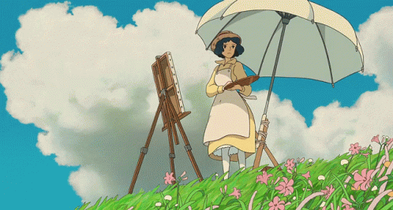

แนะนำตัว
นางสาววรณัน บุหงาเกษมสุข ม.5/10 เลขที่ 32
คติประจำใจ
"ทุกๆอย่างมีจุดจบเสมอ ยกเว้นกล้วยที่มีจุดจบสองจุด"
มหาลัยและคณะที่สนใจ
- • คณะวิศวกรรมศาสตร์ สาขาวิศวกรรมคอมพิวเตอร์
- • คณะวิทยาศาสตร์ สาขาวิทยาการคอมพิวเตอร์

มหาวิทยาลัยเทคโนโลยีพระจอมเกล้าธนบุรี
King Mongkut's University of Technology Thonburi.
สถาบันเทคโนโลยีพระจอมเกล้าเจ้าคุณทหารลาดกระบัง
King Mongkut's Institute of Technology Ladkrabang.
จุฬาลงกรณ์มหาวิทยาลัย
Chulalongkorn University.
ผลงานที่ชอบ
อื่นๆ
ผลงานวาดอื่นๆ